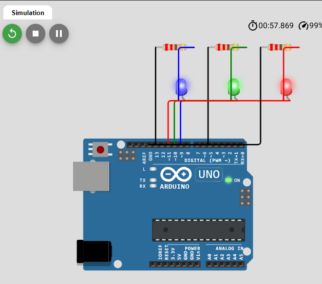
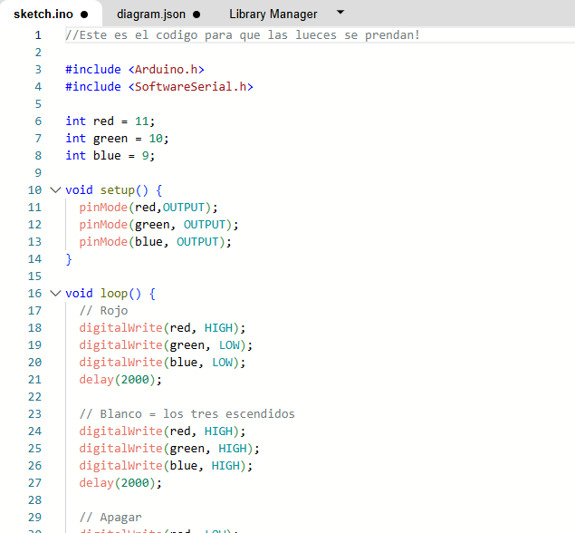

Construcción y programación del circuito con Arduino
1. ¿Qué es Arduino?
Arduino es una plataforma de hardware y software que permite Desarrollar proyectos electrónicos interactivos. Mediante una Placa física y un programa, es posible controlar componentes Electrónicos, como luces LED, sensores y motores, según las Instrucciones establecidas.
En el proyecto “Luna y sus fases”, Arduino se utiliza para Controlar tres luces LED que representan de manera sencilla Diferentes apariencias de la Luna. ¡La idea es combinar los Conocimientos de programación con la construcción de un circuito Electrónico y una representación visual de un proyecto completo!
Para desarrollar este tipo de proyecto no alcanza solamente con Conectar los componentes: también es necesario programar la placa Para indicar qué debe hacer cada uno y en qué momento debe Encenderse o apagarse.
2. Componentes y conexiones del circuito
Para realizar el circuito se utiliza una placa Arduino UNO, Tres luces LED, tres resistencias de 220 ohmios y cables de Conexión. Cada elemento cumple una función específica dentro Del sistema.
- Arduino UNO: es la placa que ejecuta el Programa y controla las salidas eléctricas conectadas a los LED.
- Tres LED: se utilizan luces de color rojo, Verde y azul. Mediante el encendido individual y la combinación De estas luces, se pueden representar diferentes colores para El proyecto.
- Tres resistencias de 220 ohmios: se coloca Una en serie con cada LED para limitar la corriente eléctrica Y reducir el riesgo de dañarlos.
- Cables: permiten conectar los componentes Con los pines de Arduino y completar el circuito eléctrico.
- Bluetooth: permite la comunicación inalámbrica Entre la aplicación móvil y Arduino, para enviar instrucciones Desde el celular.
El LED azul está conectado al Arduino UNO mediante el pin 9, el verde al pin 10 y el rojo al pin 11. Cada LED se conecta también a una resistencia de 220 ohmios y a GND, que corresponde a la conexión de tierra del circuito.
Estas conexiones deben coincidir con los números de pin establecidos en el programa para que Arduino pueda controlar correctamente cada luz.
3. Programación y funcionamiento de la placa
Para controlar los componentes se necesita un programa que establezca las acciones que debe realizar Arduino. En el código utilizado se identifican los tres LED mediante variables: red, green y blue, asociadas a los pines 11, 10 y 9, respectivamente.
La función setup() se ejecuta al iniciar el programa y configura los pines de los LED como salidas mediante la instrucción pinMode(). Esto permite que la Placa controle el encendido y apagado de las luces.
Por otro lado, la función loop() repite continuamente las instrucciones principales. En el programa primero se enciende el LED azul y se mantienen apagados los otros dos. Luego se encienden en simultaneo el rojo y el azul para crear el color violeta, el verde se mantiene apagado. Después se encienden los tres LED al mismo tiempo y, finalmente, se apagan todos.
Entre cada etapa se utiliza la instrucción delay(2000), que introduce una pausa de dos segundos. Así, cada estado de las luces puede observarse antes de que el programa continúe con la siguiente acción.
4. Simulación y comprobación del funcionamiento
Antes de llevar el circuito a su montaje físico, se utilizó Wokwi, un simulador en línea que permite Representar placas electrónicas, conectar componentes y probar Programas sin necesidad de disponer inicialmente de todos los Elementos reales.
En la simulación se incorporó una placa Arduino UNO, tres LED De distintos colores, tres resistencias de 220 ohmios y las Conexiones necesarias para completar el circuito. Luego se Incorporó el programa encargado de controlar las luces.
Al ejecutar la simulación, se pudo comprobar que las luces Respondían a la secuencia programada: primero se encendía el LED rojo, después se encendían los tres LED simultáneamente y, Por último, se apagaban todos. Cada estado duraba aproximadamente Dos segundos antes de cambiar.
Esta prueba permitió verificar el funcionamiento básico de la Programación y las conexiones representadas en el simulador. También ayudó a detectar posibles errores antes de pasar al Armado físico del circuito.
Las siguientes imágenes muestran el circuito simulado y algunas De las etapas de funcionamiento que se observaron durante la prueba.
Referencias visuales


5. Control mediante Bluetooth y la aplicación móvil
Una de las partes del proyecto es integrar Arduino con la Aplicación móvil desarrollada mediante MIT App Inventor. La aplicación cuenta con un botón destinado a gestionar la Conexión Bluetooth y otros tres botones para controlar las luces LED desde el teléfono celular.
La comunicación Bluetooth permite transmitir información entre Dispositivos compatibles sin utilizar una conexión física directa Entre el celular y la placa. Para que el sistema funcione, es Necesario que el dispositivo Bluetooth esté conectado correctamente a Arduino y que la aplicación pueda comunicarse con él.
Además, el programa de Arduino debe incluir las instrucciones Necesarias para recibir e interpretar los datos enviados por la Aplicación. Según la instrucción recibida, la placa podrá encender O apagar los LED correspondientes.
La explicación del diseño de la aplicación y de sus botones se Encuentra en la página dedicada a MIT App Inventor. La integración Entre ambos sistemas permite plantear el control de un circuito Electrónico desde una interfaz móvil.
6. Representación de las fases de la Luna
El objetivo del circuito es representar de una forma sencilla Las distintas fases de la Luna. Para lograrlo, los tres LED se Ubican dentro de una estructura redondeada con pequeños agujeros Que imitan visualmente los cráteres de la superficie lunar.
Para conseguir los colores deseados, se utilizan distintas Combinaciones de las luces roja, verde y azul. El LED azul puede Encenderse por sí solo para representar el azul; la combinación Del azul y el rojo permite obtener un tono violeta o magenta, Y el encendido de los tres LED al mismo tiempo produce el blanco.
Estas combinaciones permiten diferenciar visualmente los estados Del modelo y utilizarlos para representar distintas apariencias De la Luna. De esta manera, el circuito no solo muestra el Funcionamiento de los componentes electrónicos, sino que también Se relaciona con el tema principal del proyecto.
La estructura redondeada complementa el circuito y hace que el Montaje se parezca a una maqueta lunar. Así, la programación, Los componentes electrónicos y el diseño físico trabajan juntos Para comunicar la idea de las fases lunares de forma simple.
¡Se trata de una representación didáctica simplificada!
7. ¿Qué aprendimos? Conclusión
La realización de este proyecto permitió aprender los conceptos Básicos del funcionamiento de Arduino y su aplicación en un Circuito electrónico. Se trabajó con la identificación de Componentes, la conexión de LED, el uso de resistencias para Limitar la corriente y la selección de pines digitales para Controlar las luces.
También se practicó la programación de una secuencia de acciones, Utilizando funciones como setup() y loop(), instrucciones para configurar las salidas Y pausas para controlar el tiempo durante el cual permanece Encendida cada combinación de luces.
Finalmente, el proyecto relaciona la programación y la electrónica Con una propuesta visual sobre las fases de la Luna. La integración Con una aplicación móvil mediante Bluetooth forma parte del Objetivo de control del circuito, siempre que se complete y Compruebe la comunicación entre ambos dispositivos.
¡En conclusión, el trabajo permitió comprender cómo un programa Puede controlar componentes físicos y cómo una simulación sirve Para probar una idea antes de construirla. Además, muestra la Importancia de combinar hardware, software y diseño para Desarrollar un proyecto tecnológico con un propósito educativo!